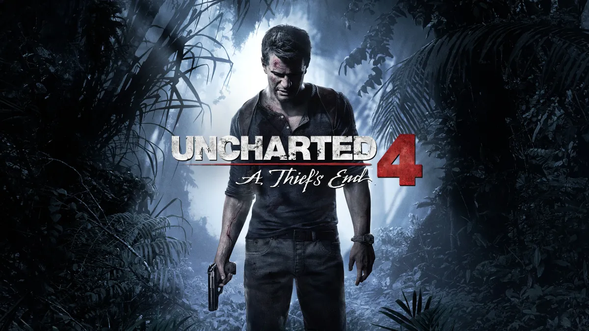
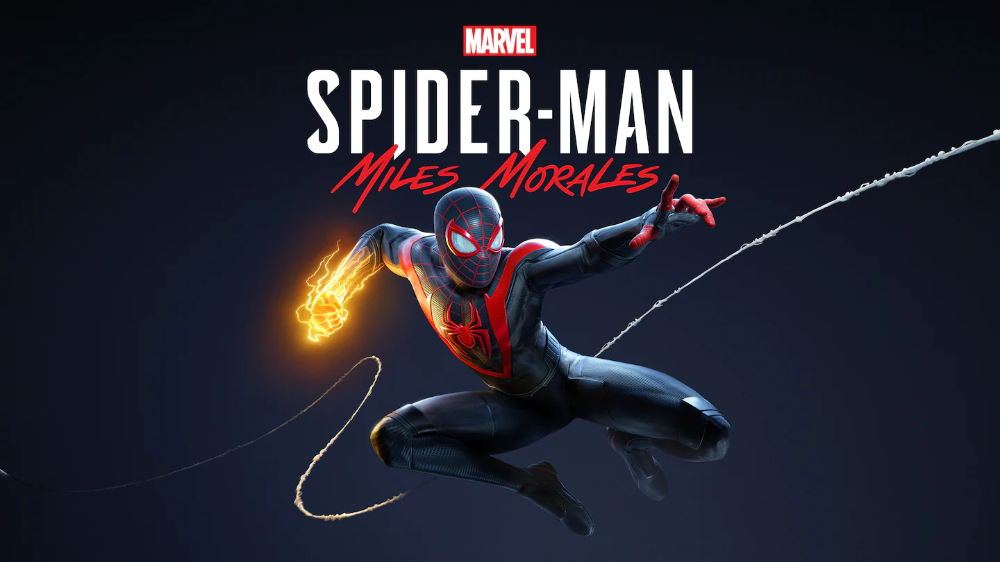
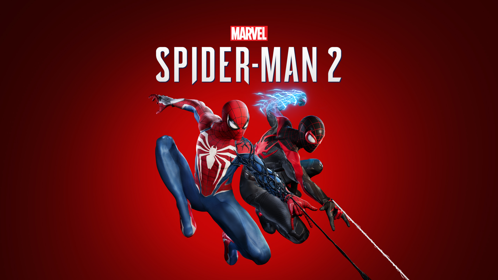
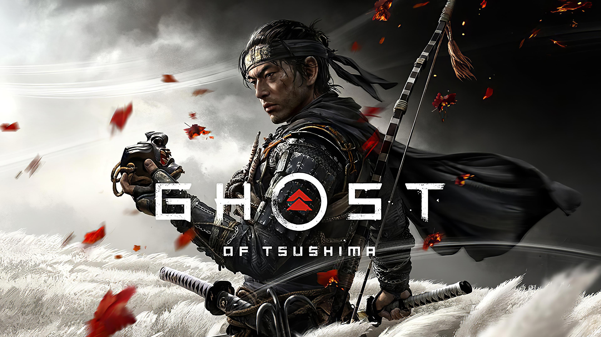

Capcom brings the series back to Raccoon City with dual protagonists Grace and Leon. Tense, gorgeous, and relentlessly paced — one of the best in the franchise.

The gold standard of open world RPGs. A decade on, nothing has matched its writing, scale, or the weight of its choices.

Rockstar's magnum opus. A slow, devastating portrait of the dying frontier. Nothing else comes close.

The bravest game a major studio has made. Uncomfortable, divisive, and deeply unforgettable.

The foundation of a franchise, finally in official English. Twenty years later it's still the peak.

Twenty years in the making. Nasu rebuilt this masterpiece from the ground up — and the result is one of the finest VNs ever written.

Six years was worth every second. Silksong surpasses its predecessor in scope, depth, and boss design.

Bolder and more personal than Tsushima. Ezo is breathtaking and Atsu's quest for vengeance is gripping throughout.

The perfect closing chapter. Naughty Dog at the height of their craft — a story about growing up and letting go.

The definitive version of one of the greatest games ever made. Joel and Ellie remain gaming's greatest duo.

The definitive superhero game. The best movement system in gaming wrapped around a Peter Parker worth caring about.

A tighter, more intimate Spider-Man story. Harlem at Christmas has never looked better.

The most technically spectacular superhero game ever made. The Symbiote arc delivers.

The most beautiful open world game ever made. A love letter to samurai cinema that stands on its own as art.

A decade later, Los Santos remains one of the most convincing game cities ever built.

Night City is one of the greatest game worlds ever built. Phantom Liberty made it unmissable.

TYPE-MOON's most visually stunning work. A 1980s coming-of-age story unlike anything else in the medium.

A masterclass in how to remake a classic. Atlus treated the source material with genuine reverence.